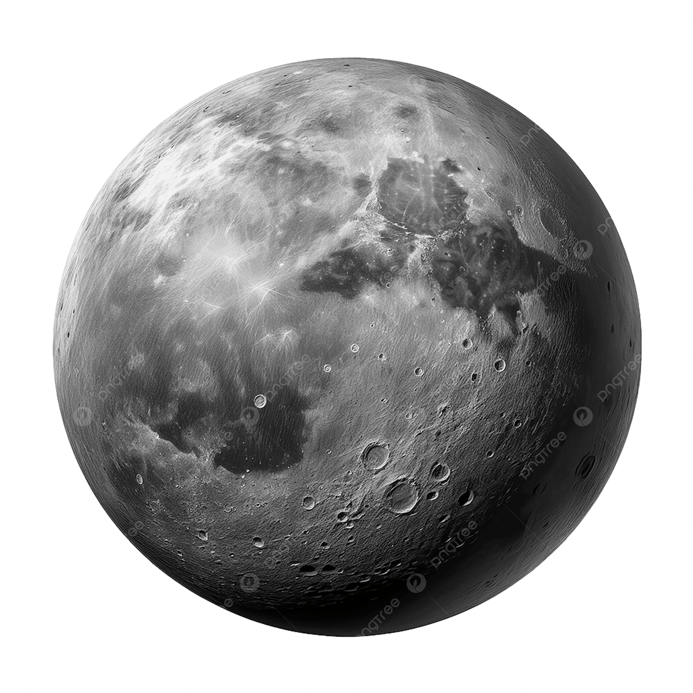
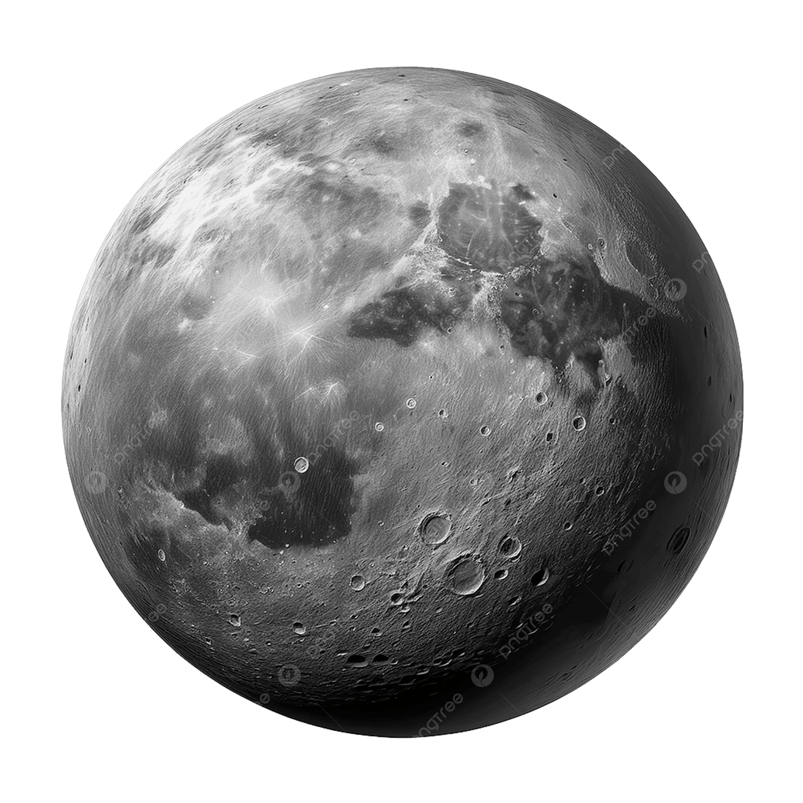
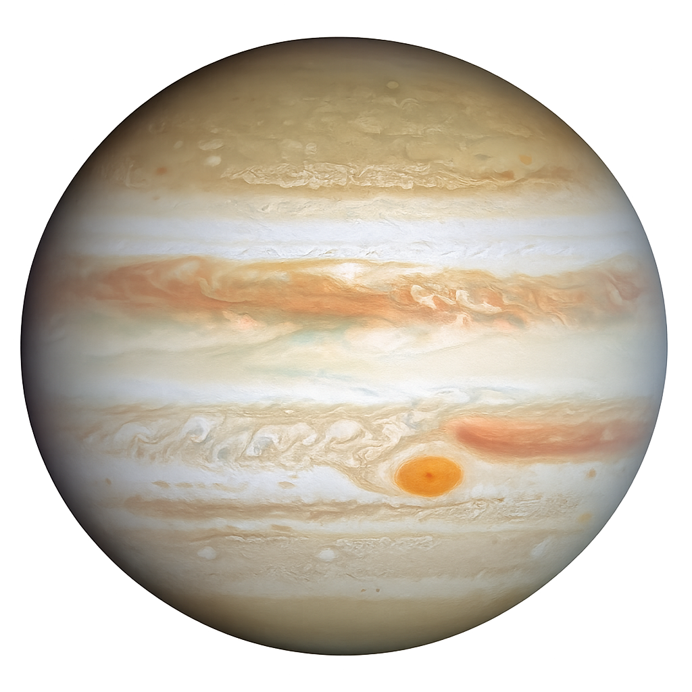
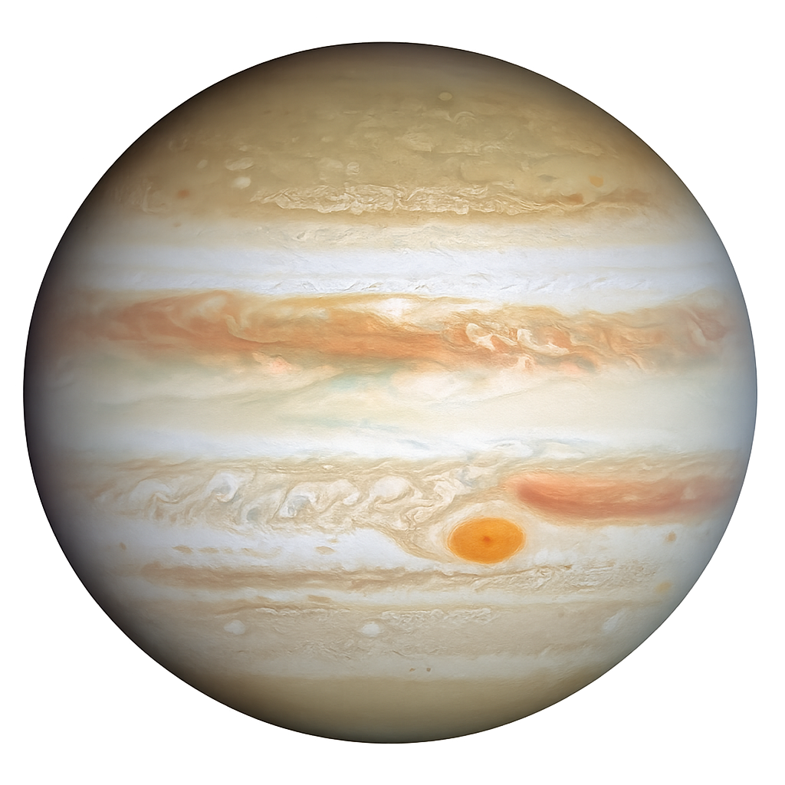
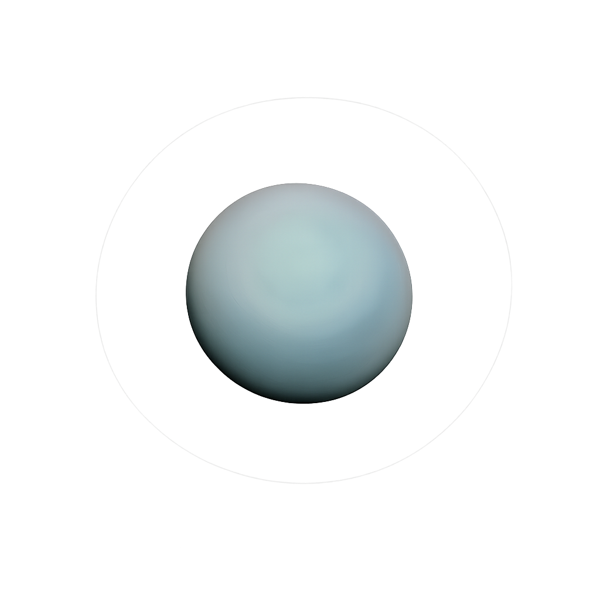
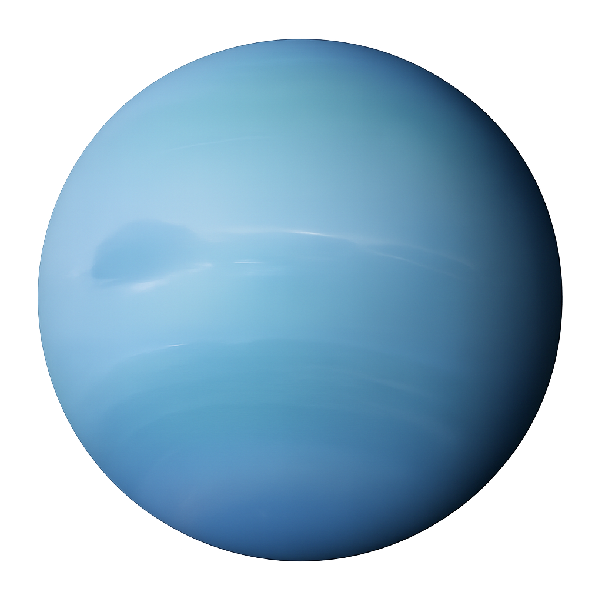
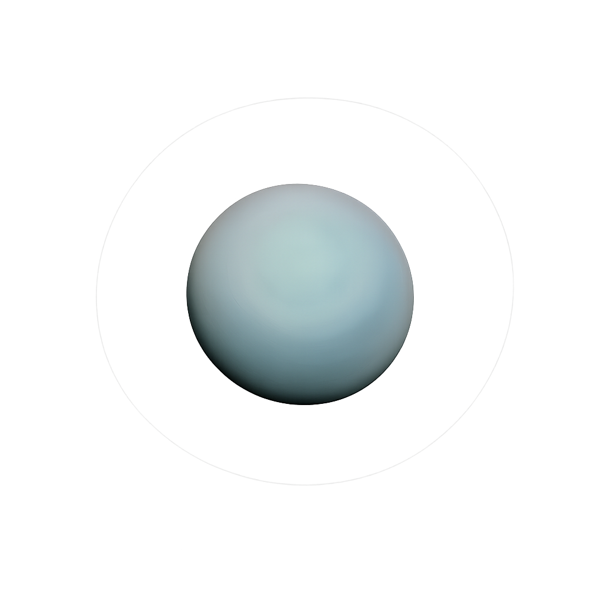
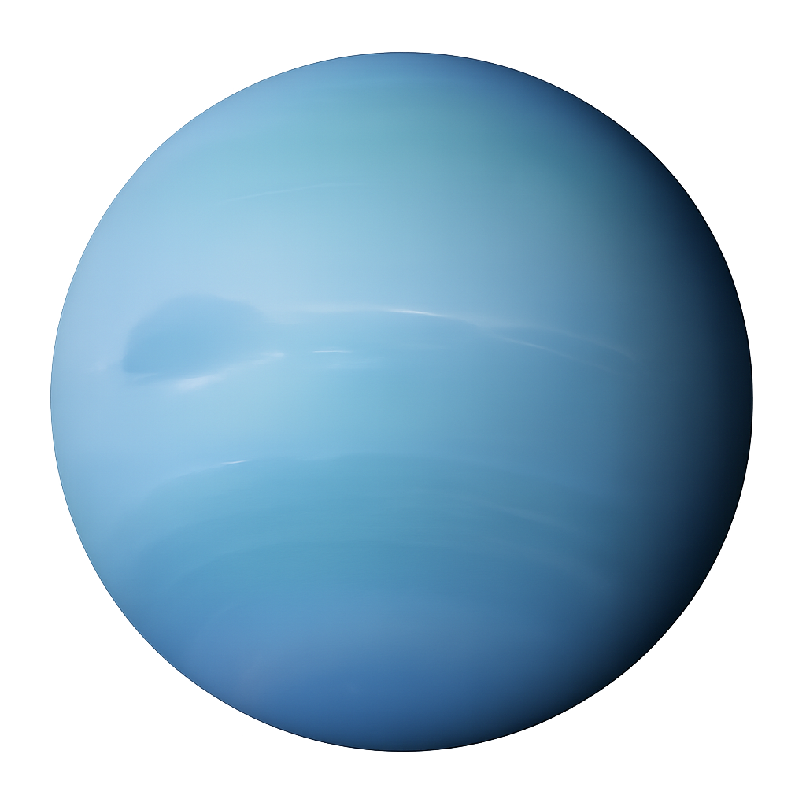

화성 (Mars)
분류: 지구형 행성 · 표면에 물 흔적 보유 천체
화성은 붉은 철 산화물 먼지로 덮인 지구형 행성으로,
내부는 약 70%의 규산염 암석, 약 30%의 금속 핵으로
이루어져 있습니다. 대기는 매우 희박하며
약 95%가 이산화탄소, 2.6%가 질소, 1.9%가 아르곤으로
구성되어 있습니다. 과거에는 물이 흐른 흔적이
남아 있으며 거대한 화산과 협곡이 존재합니다.
- 평균 반지름: 3,389.5 km
- 질량: 6.4171 × 1023 kg
- 표면 온도(평균): ~210 K (약 −63°C)
수성 (Mercury)
분류: 지구형 행성 · 태양에 가장 가까운 행성
수성은 태양에 가장 가까운 지구형 행성으로,
내부 구성은 약 70%에 달하는 거대한 철·니켈
금속 핵과 약 30%의 실리케이트 암석 맨틀로
이루어져 있습니다. 대기는 거의 존재하지 않아
극심한 온도 변화가 일어나며, 표면은
충돌 크레이터와 고지대로 뒤덮여 있습니다.
- 평균 반지름: 2,439.7 km
- 질량: 3.3011 × 1023 kg
- 표면 온도(대략): 낮 최고 ~700 K, 밤 최저 ~100 K

 



 

 


